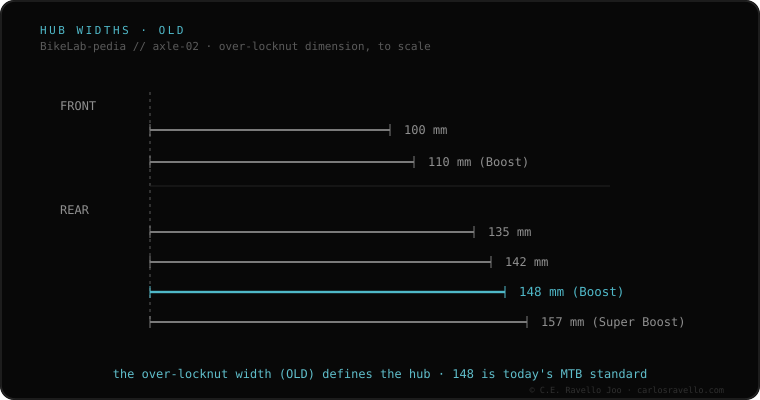

Hub spacing —OLD (Over-Locknut Dimension)— is the distance between the outer faces of the hub locknuts, and it must match the inner space between the frame or fork dropouts. It's the measurement that decides whether a wheel physically fits your bike. Common values: front 100 or 110 mm; rear 135, 142, 148 (Boost) or 157 (Super Boost). If the hub OLD doesn't match your frame, the wheel won't fit (or fits forced and damages the frame).
It's the first compatibility filter of any wheel: if the width doesn't match, nothing else matters.
OLD is measured with a caliper between the flat faces of the hub locknuts (or between the inner faces of the dropouts, with the wheel removed). It's an external figure: don't confuse it with the axle length, which is longer. Half a millimeter tolerance is acceptable on steel or aluminum; on carbon, none: the width must be exact.

The hub OLD must be identical to the width your frame or fork specifies. There's no conversion without adapters (endcaps), and even then it isn't always possible. Before buying a wheel, confirm your width by measuring between dropouts.
If you don't know which axle, width or thread your frame uses, send us the case. Real diagnosis, nothing to sell you. Message us on WhatsApp
Remove the wheel and measure with a caliper the distance between the inner faces of the dropouts where the hub rests. That's your width.
No. OLD is the width between hub locknuts; the axle is longer because it passes through the dropouts. Different things.
On steel, sometimes, with controlled cold-setting. On aluminum or carbon, never: it destroys it.
© 2026 BikeLab Studio. Content under CC BY 4.0: you may copy, translate and publish it, even for commercial purposes. Citation is mandatory. Without attribution, the license terminates automatically (CC BY 4.0, §6.a) and the use becomes copyright infringement: we request the removal of the content and its deindexing. · Design and ownership: Carlos Ravello Joo